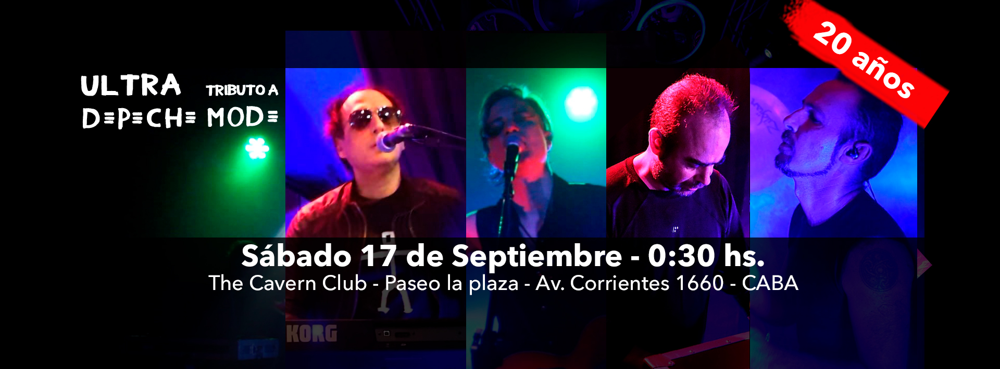

Ultra surgió en el año 2002 con la idea de realizar un Tributo a Depeche Mode, banda favorita de sus integrantes, con el respeto que la misma se merece.En sus 20 años de trayectoria realizaron shows en distintos bares y radios como Radio Metro 951 - Programa Basta - Estudio Cerati, Verlina Borterix, Hard Rock Café, The Cavern, La Viola Bar Quilmes, Santos Vegas, The Temple Bar, Liverpool Bar, Club Aráoz, La Cigale, Auditorio Cendas, Crobar, Kimika Pub (Gualeguaychú), entre otros.